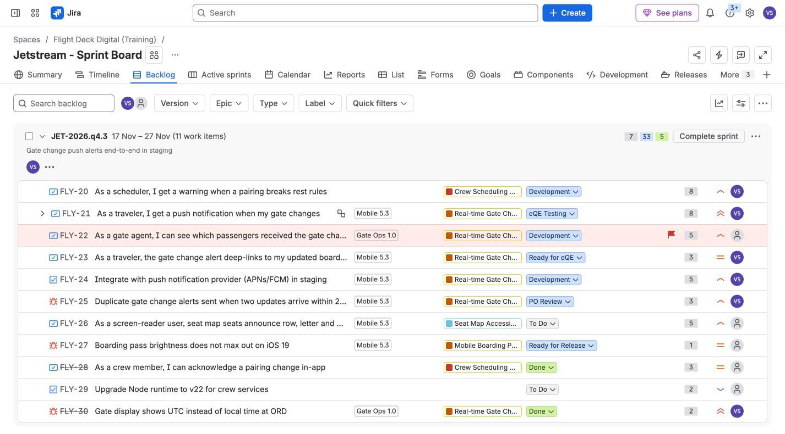

Every pilot starts on the ground. In this level you learn how Jira is laid out, how to find and update work without getting lost, how to read a board, and how to fly with Rovo, Atlassian's AI assistant. Pass the checkride at the end and you're cleared for Rovo.
⏱ ~3.5 hrs live + 1 hr self-paced🎓 Blended: live + on-demand✈ 4 missions · 1 checkridePrereq: a Jira account
From the flight deck
Good morning, and welcome aboard. Today's flight takes you from “What's a space?” to working with confidence in your team's board. There's no need to memorize anything. Know where things are, know what the words mean, and know when to ask Rovo for help. Seatbacks up, laptops open. Let's go.
Before you board
GS-1 Welcome aboard: spaces & navigation
⏱ 30 min🖥 Live demo + follow-along
After this lesson you can
Explain what a space is and find the spaces you work in.
Use For you, Recent and Starred to get back to work fast.
Move between a space's views: Summary, Timeline, Backlog, Board, List, Reports.
Find any work item with search and a handful of keyboard shortcuts.
A space (older Jira screens and docs say project) is the hangar where a team's work lives. Each space has a short key, and every work item in it is numbered with that key. Our training space is Flight Deck Digital (Training), key FLY, so its work items are FLY-1, FLY-2 and so on. If you know the key, you know where the work lives.
The sidebar is your departures hall: For you, Recent, Starred, Spaces, then Filters and Dashboards. Inside a space, the tabs across the top (Summary, Timeline, Backlog, Active sprints…) are different views of the same work.
Your four ways home
🧭
For you
Your personal dashboard. It shows work assigned to you, items you've recently viewed and boards you visit. Start your day here.
🕘
Recent
Spaces, boards and items you opened lately. It's the quickest way back to “that ticket I was just looking at”.
⭐
Starred
Pin the spaces, boards, filters and dashboards you use every day. Click the star next to a name, and it appears under Starred in the sidebar.
🔎
Search
The search bar at the top finds work items, spaces and more. Type a key such as FLY-25 to jump straight to it, or a few words to search summaries.
Inside a space: the tabs
Tab
What it's for
When you'll use it
Summary
Health at a glance: status breakdown, recent activity, workload.
Getting your bearings in a space you don't know.
Timeline
Epics on a calendar, with releases and sprints across the top.
“When is this landing?” conversations.
Backlog
Ordered list of upcoming work plus sprints (Scrum boards).
Refinement and sprint planning.
Active sprints / Board
Cards moving across columns.
Daily standup, updating your own work.
List
Spreadsheet-style list with inline editing.
Bulk-ish edits and quick scans.
Reports
Velocity, sprint report, burndown, cumulative flow and more.
Retros and planning (covered in Level 2).
Shortcuts that make you look like a frequent flyer
Click on an empty part of the page first, so you're not typing in a text box, then try these:
/Jump to search
cCreate a work item
?Show every shortcut on your site
g then dGo to dashboards
mAdd a comment (on a work item)
iAssign to me (on a work item)
Pro tip
Press ? once and skim the list. Shortcuts change now and then, and the ? panel is always right for your site. Learn three and you'll save minutes every day.
GS-2 Anatomy of a work item
⏱ 30 min🖥 Live + discussion
After this lesson you can
Describe the work hierarchy, from Initiative down to Sub-task.
Pick the right work type: Story, Task, Bug, Spike or Risk.
Read the key fields on any item and explain what each one does.
Explain the three status categories and why they matter for reports.
Think of the hierarchy as a flight schedule. An Initiative is the route network. An Epic is a single route. Stories, Tasks, Bugs and Spikes are the flights. Sub-tasks are the pre-flight checklist items.
InitiativeA big business goal spanning many epics and often several teams. Example: “Self-service during disruptions”.
EpicA large body of work that takes several sprints. Example: FLY-4 IROPS Self-Service Rebooking.
Story · Task · Bug · Spike · RiskSprint-sized work. Example: FLY-36 “As a traveler on a canceled flight, I see rebooking options in-app”.
Sub-taskA small step inside one item. Example: FLY-53 “Localize alert copy” under FLY-21.
Work type
Use it when…
Sandbox example
Story
You're delivering value a user can notice. Written as “As a…, I can…”.
FLY-15 Add boarding pass to Apple Wallet
Task
The work is needed but isn't user-facing: setup, upgrades, chores.
FLY-29 Upgrade Node runtime to v22
Bug
Something is broken compared with what was expected. Always use the Bug type, not a Task with a “defect” label.
FLY-25 Duplicate gate change alerts
Spike
Time-boxed research to reduce uncertainty before committing.
FLY-33 Assess bag scan event latency
Risk
Something that might hurt delivery and needs an owner and a mitigation.
FLY-46 Partner contracts not signed before Q1 pilot
Spot the anti-pattern
FLY-44 “Defect: login spinner never stops on slow 3G” was logged as a Task with a defect label. That hides it from every report and filter that looks for Bugs. The standard is simple: if it's broken, it's a Bug.
The fields that matter most
Summary
The one-line title. Make it searchable and specific.
Description
Context, plus acceptance criteria that say how we'll know it's done.
Status
Where the item is in the workflow, for example Development or PO Review.
Assignee / Reporter
Who's doing it, and who raised it.
Parent
The epic (or item) this rolls up to. Items with no parent are “orphans”.
Story Points
Relative size estimate used for planning and velocity.
Sprint
The time-box the item is planned into, for example JET-2026.q4.3.
Components & Labels
Tags. Components are a governed list; labels are free-form.
Fix versions
The release the work ships in, for example Mobile 5.3.
Status categories: the three colors
Teams can have many statuses, but Jira groups every status into one of three categories. Reports, filters and progress bars all rely on these.
To Do (grey)→In Progress (blue)→Done (green)
In our sandbox, New Idea, Product Refinement, Team Refinement, Ready and To Do are grey. Development, Ready for eQE, eQE Testing, PO Review and Ready for Release are blue. Done is green.
GS-3 Everyday flying: find, create, update
⏱ 45 min🛠 Hands-on
After this lesson you can
Create a work item that a teammate can pick up without asking questions.
Comment, @mention, watch, link and flag work correctly.
Move an item through its workflow and know what each move signals.
Create: write it right the first time
Press c or click + Create. Choose the space, the work type and a summary, then fill in the description. The test of a good item: could someone pick this up tomorrow without messaging you?
✗ Turbulent
Summary: seat map fix
Description: doesn't work with screen reader, pls fix asap
No user, no outcome, no way to test it. Which screen reader? What should happen instead?
✓ Smooth air
Summary: As a screen-reader user, seat map seats announce row, letter and price
Description: VoiceOver and TalkBack currently read “button” for every seat.
Acceptance criteria
Each seat announces row, letter, type and price
Unavailable seats are announced as unavailable
Tested with VoiceOver and TalkBack
From the flight deck: the INVEST check
A good story is Independent, Negotiable, Valuable, Estimable, Small and Testable. Acceptance criteria take care of the “Testable” part. If you can't write them, the story isn't ready.
Update: the six everyday moves
Move
How
Why it matters
Comment
Press m or click Add a comment.
Decisions belong on the ticket, not in a chat thread that disappears.
@mention
Type @ and a name inside a comment or description.
Notifies that person directly. Use it when you need something from them.
Watch
Click the eye icon at the top right of the item.
You get updates without being the assignee.
Link
Use the Link work item action and choose a type such as blocks, relates to or duplicates.
Shows dependencies. FLY-24blocksFLY-22.
Flag
Use Add flag from the item's actions (or right-click a card on the board).
Turns the card yellow and raises an impediment. FLY-22 is flagged.
Transition
Click the status button and pick the next status, or drag the card on the board.
The board, the reports and your teammates all rely on accurate status.
varoonsahgaltraining.atlassian.net/browse/FLY-25
A healthy comment trail on FLY-25: eQE failed it with a precise reason, development explained the fix, and eQE passed it. Anyone can follow the story, including Rovo when it summarizes the item.
Find: three ways to search
Quick search (/): type a key or keywords.
Basic filters on the search page: pick space, type, status and assignee from dropdowns.
JQL, Jira Query Language, for precise questions. You'll get a taste here and the full course in Level 2.
-- everything assigned to me in FLY that isn't finished
project = FLY AND assignee = currentUser() AND statusCategory != Done
ORDER BY priority DESC
No JQL yet? No problem.
On the search page, the Ask AI button lets you type a question in plain English. Rovo writes the JQL for you. You'll try it in GS-5 and Mission GS-M4.
GS-4 Reading boards & backlogs
⏱ 30 min🖥 Live demo
After this lesson you can
Tell a Scrum board from a Kanban board, and say when each fits.
Explain how columns map to statuses.
Use quick filters and swimlanes to cut the noise.
Diagnose the classic problem: “my ticket disappeared from the board”.
🏃 Scrum board
Work is planned into fixed-length sprints, usually two weeks. The board shows only the active sprint. Planning happens in the Backlog.
Best for: delivery teams with a regular cadence. Example: Jetstream - Sprint Board.
🌊 Kanban board
Work flows continuously with no sprints. Column limits (WIP limits) stop too much piling up in one stage.
Best for: refinement pipelines, support and ops. Example: Jetstream - Backlog Readiness.
…/projects/FLY/boards/3 · Active sprints
Each column is one or more statuses. The yellow card (FLY-22) is flagged. The sprint name, JET-2026.q4.3, appears at the top right.
How to read a card
Summary at the top, then labels (e.g. Blocked, accessibility).
The parent epic chip in the epic's color.
The work type icon and key, the story points bubble, a priority arrow and the assignee avatar.
A red flag icon and yellow background mean there's an impediment.
Quick filters (or Custom filters) are one-click views such as “only my items” or “only bugs”. Clicking your avatar at the top of the board does the same for one person. Swimlanes (the Group button) split the board horizontally, for example by epic or by assignee. Standups go faster when you group by assignee.
…/projects/FLY/boards/3/backlog

The Backlog shows the sprint goal (“Gate change push alerts end-to-end in staging”), each item's epic and release, and point totals by status category (the grey, blue and green bubbles).
“My ticket vanished from the board!”
Nine times out of ten it's one of these:
Unmapped status. The item's status isn't in any board column, so it's hidden. On our Sprint Board, items in Team Refinement don't show, by design. They live on the Backlog Readiness board.
Board filter. The board's saved filter excludes it. For example, the Sprint Board excludes the Risk type.
Not in the active sprint. Scrum boards only show the current sprint. Check the Backlog.
A quick filter is on. Look for a highlighted filter or avatar.
GS-5 Rovo 101: your AI co-pilot
⏱ 45 min🖥 Live + hands-onUnlocks Rovo access
After this lesson you can
Explain the three ways to use Rovo: Search, Chat and Agents.
Choose between chat and an agent for a given job.
Use Rovo inside Jira to summarize, improve and search work.
Verify AI output before you rely on it, every time.
Why this lesson matters
Rovo is one of the most under-used tools in our Atlassian stack. Passing this level's checkride is the gate for turning Rovo on for you. Treat it like a type rating: learn what it does well, where it can go wrong, and how to check its work.
The three cockpit instruments
🔍
Search
Finds content across Jira, Confluence and connected apps, and only shows you what you already have permission to see.
💬
Chat
A conversation. Ask questions, summarize, draft and brainstorm. You steer every turn, and nothing changes unless you act on it.
🤖
Agents
Specialists with a set job, instructions and sometimes actions. They do a repeatable task the same way each time.
Chat or agent? Quick rule
If your job is…
Use
Example
A one-off question or draft
Chat
“Summarize the discussion on FLY-36 for my manager.”
Exploring or brainstorming
Chat
“What questions should we ask before estimating the IROPS epic?”
The same task again and again, which should run the same way every time
Agent
A “Definition of Ready checker” that reviews new stories for acceptance criteria.
Work triggered by an event (a new ticket, a status change)
Agent + automation
Draft release notes whenever a version is released.
Anyone with Rovo can use available agents. Creating agents is limited to a small group of builders today. If you have an idea for an agent, write it up and send it through your team's agent request process. Mission RV-M4 shows you how to write a strong request.
Rovo inside Jira: three moves to know on day one
1 · Summarize
On a work item, click Summarize work item. You get a briefing built from the description, comments and history.
2 · Improve
The Improve Story or Improve Bug button suggests a clearer description and acceptance criteria. Review it before you accept.
3 · Ask AI
On the search page, describe what you want in plain English. Rovo writes the JQL and runs it.
…/browse/FLY-36 · Summarize work item
Rovo read the comment thread on FLY-36 and pulled out the next step (split the story in Team Refinement) and the key risk (the rebooking engine API takes 8–12 s under load). Note the footer: Uses AI. Verify results.
…/issues · Ask AI
Plain English in, JQL out: project = "FLY" AND issuetype = "Story" AND status = "Ready" AND cf[10036] IS EMPTY. The result is FLY-43, a story marked Ready that nobody has estimated.
What Rovo is great at, and where it slips
✅ Strong
Summarizing long threads and history
First drafts of stories, acceptance criteria and release notes
Turning questions into searches
Finding related or duplicate work
Explaining unfamiliar terms in your docs
⚠️ Watch out
It can sound confident and still be wrong
It can't see what you can't see (permissions apply)
Generated JQL may include extra conditions or miss edge cases
It doesn't know team decisions that were never written down
It's not a substitute for the team agreeing on estimates
From the flight deck: trust, but cross-check
Pilots trust their autopilot, and they still cross-check the instruments. Do the same with Rovo. Read the generated JQL before using the results, open two or three items to confirm the summary matches reality, and never paste passwords, keys or customer personal data into a prompt.
GS-6 Golden Template preview
⏱ 15 min📖 VocabularyDeep dive in Level 2
After this lesson you can
Recognize the two-board model in your organization's standard template.
Name the statuses work moves through, from idea to production.
Decode a sprint name like JET-2026.q4.3.
Your organization's standard template, which we call the Golden Template, gives every team the same structure. When you move teams, the board looks familiar and the reports mean the same thing. Today we only learn the words. Level 2 teaches you to run it.
Two boards, one space
🧪 Backlog Readiness (Kanban)
Ideas are refined until they're Ready. No sprint is needed. The goal is to always have 2–3 sprints of Ready work waiting.
New Idea→Product Refinement→Team Refinement→Ready
🚀 Sprint Execution (Scrum)
Committed work is delivered inside the active sprint.
To Do→Development→Ready for eQE→eQE Testing→PO Review→Ready for Release→Done
…/projects/FLY/boards/4 · Kanban board
The Backlog Readiness board. Product Refinement and Team Refinement have WIP limits so refinement doesn't become a parking lot.
Decode a sprint name
Part
JET-2026.q4.3
Meaning
TeamCode
JET
The team (here, Jetstream)
Year
2026
The (fiscal) year
Quarter
q4
The (fiscal) quarter
Sprint
3
The third sprint of that quarter
Why bother with a naming standard?
Because sprint = "JET-2026.q4.3" sorts, filters and reports cleanly across every team. “Sprint 7 (the good one)” doesn't.
eQE = engineering quality engineering, the testing stage. PO = product owner.
Missions
Time to fly the real thing. Each mission runs in the live sandbox. Mark it complete to earn miles. Several classmates work in the same space, so start anything you create with your initials, and only change items a mission tells you to.
MISSION GS-M1
Find your gate
Turbulence
Mission brief · A navigation scavenger hunt. Find each answer in the sandbox using only the sidebar, the space tabs and search. Write down your answers before you open the debrief.
Open the space Flight Deck Digital (Training). What is its key?
Open Jetstream - Sprint Board and star it. Confirm it now appears under Starred in the sidebar.
What's the name of the active sprint, and what's its sprint goal? (Hint: look in the Backlog.)
Press / and search for apostrophe. Which bug is about passenger names crashing the boarding pass?
Open FLY-25. Which epic is its parent, and which release (fix version) is it in?
On the Sprint Board, find the yellow card. What's its key, and what is blocking it?
Open the Timeline tab. Which epic starts the latest?
Show debrief
FLY
The board should appear under Starred. Starred items are the fastest way back.
JET-2026.q4.3: “Gate change push alerts end-to-end in staging”.
FLY-50, “Boarding pass crashes when passenger name contains an apostrophe”. You may also have spotted FLY-51, which is a duplicate of it. Keep that in mind for Rovo later.
Parent FLY-2 Real-time Gate Change Alerts; fix version Mobile 5.3.
FLY-22 (gate agent alert delivery). It's flagged and blocked by FLY-24, the push notification provider integration.
FLY-4 IROPS Self-Service Rebooking, starting January 2027.
The sandbox is shared, so if a classmate has moved something, trust what you see and tell the instructor.
+250 mi
MISSION GS-M2
Write it right
Turbulence
Mission brief · The accessibility epic FLY-6 needs another story. Create one that a developer and a tester could pick up tomorrow without asking you a single question.
Press c. Space: FLY. Work type: Story.
Summary: start with your initials in square brackets, then use the user-story format. Example: [AK] As a keyboard-only user, I can select a seat using Tab and Enter.
Description: one or two sentences of context, then an Acceptance criteria heading with at least three testable bullets.
Set Parent = FLY-6 Seat Map Accessibility, Component = Mobile App, and add a label with your initials in lowercase (e.g. ak).
Leave Story Points empty. Estimating is a team activity.
Create it. Then add a comment that @mentions a classmate and asks them to review the acceptance criteria.
Swap with that classmate. Score their story against INVEST, and reply in a comment with one improvement.
Show debrief
A strong answer looks like this:
Summary: [AK] As a keyboard-only user, I can select a seat using Tab and Enter
Context: Travelers who can't use a pointer currently can't choose seats (WCAG 2.1.1 Keyboard).
AC: Tab moves through seats row by row · Enter selects the focused seat · Focus is always visible · Unavailable seats are skipped or announced as unavailable
Check your own: does every AC bullet describe something a tester can observe? “Works well” and “is fast” are not testable. “Selects within 1 second” is.
Find your work later with this query:
project = FLY AND reporter = currentUser() ORDER BY created DESC
+350 mi
MISSION GS-M3
Read the board like a pilot reads the instruments
Turbulence
Mission brief · It's 9:00 and standup starts in five minutes. Open Jetstream - Sprint Board, or use the screenshot in GS-4, and answer these the way you'd report them to the team.
Which item is being tested right now (eQE Testing), and how many story points is it?
Which item is waiting for the product owner (PO Review)? Is it a story or a bug?
Which item is flagged, and why can't it move? (Open it and look at its links.)
What's sitting in Ready for Release?
Click Group and group by assignee. Which items in the sprint have no assignee? Is that a problem mid-sprint?
Find the item that was carried over from an earlier sprint. (Hint: open each Development card and check its Sprint field for more than one sprint.)
Show debrief
FLY-21 “As a traveler, I get a push notification when my gate changes”, 8 points.
FLY-25, a Bug (duplicate gate change alerts).
FLY-22, blocked by FLY-24 (push provider integration in staging). The comment explains that delivery receipts are needed first.
FLY-27 Boarding pass brightness bug, for Mobile 5.3.
Several To Do and Development items are unassigned, for example FLY-22, FLY-26 and FLY-29. A blocked, unassigned item is the one most at risk of being forgotten. Call it out at standup.
FLY-20 (pairing rest-rule warning) is in JET-2026.q4.2 and JET-2026.q4.3. Carry-over is a signal worth discussing at retro. In Level 2 you'll find these with one query.
+300 mi
MISSION GS-M4
Rovo co-pilot
Turbulence
Mission brief · Fly three legs with Rovo and cross-check every one. You're graded on how well you verify, not on how fast Rovo answers.
Leg 1: Summarize. Open FLY-36 and click Summarize work item. Then read the three comments yourself. Did the summary catch the 38% of IROPS calls figure from the product owner's comment? What did it leave out?
Leg 2: Ask AI. On the search page, click Ask AI and type: stories in FLY that are in Ready status but have no story points. Before you look at the results, read the JQL it generated. Is each condition what you asked for?
Now ask: FLY stories in Ready that have no acceptance criteria. Can Rovo answer this one with JQL? Why or why not?
Leg 3: Improve. Open the story you created in GS-M2 and click Improve Story. Accept only the suggestions you agree with, and edit the rest.
Write one sentence in a comment on your story: “Rovo suggested X; I kept / changed it because Y.”
Show debrief
Leg 1: Summaries are good at the gist (next step: split the story; risk: slow rebooking API) but can drop specific numbers and who said what. If the number matters for your decision, read the source.
Leg 2: Expected JQL is roughly project = "FLY" AND issuetype = "Story" AND status = "Ready" AND "Story Points" IS EMPTY (Rovo may show the field as cf[10036]). The answer is FLY-43.
Leg 3 (the trick question): JQL can't reliably tell whether a description contains acceptance criteria. That's a judgement about the text. Rovo Chat can read and assess items (it should point to FLY-42, the gate change audit log story, which is Ready with no AC), but treat that as a lead to check, not a fact. Knowing which questions are search questions and which are reading questions is a key Rovo skill.
Improve: Good suggestions add missing AC and clarify the user. Weak ones add generic AC (“should be user-friendly”). Delete those.
project = FLY AND issuetype = Story AND status = Ready AND "Story Points" IS EMPTY
+400 mi
Rovo readiness checkride
Ten questions. Score 80% or higher to pass Ground School. Passing is the gate for getting Rovo turned on for your account.
1. In the key FLY-25, what does FLY tell you?
The prefix is the space key. Every item in the Flight Deck Digital (Training) space starts with FLY-.
2. The app crashes when a name has an apostrophe. Which work type should you use?
Broken behavior is a Bug. A Task with a “defect” label (like FLY-44) doesn't show up in bug reports or filters.
3. A teammate says their story “disappeared from the sprint board”. What's the most likely cause?
Unmapped statuses, the board filter, not being in the active sprint, or an active quick filter explain almost every “vanished” ticket.
4. Which belongs in a good story's acceptance criteria?
Acceptance criteria must be observable and testable. The other options are opinions, urgency or links that will rot.
5. You need the same check run on every new story, with the same instructions every time. What's the best fit?
Repeatable work with fixed instructions is agent territory. Chat is best for one-off questions and exploration.
6. Ask AI turned your question into JQL. What should you do before you share the results?
Generated JQL can add or drop conditions. In our sandbox, Rovo once quietly added an unused “In Progress” status to a query. Always read it.
7. Can Rovo show you a Confluence page you don't have permission to view?
Rovo only uses content you can already access. That's also why its answers may differ from a teammate's.
8. Which should you never put in a Rovo prompt?
Treat prompts like any shared workspace. Secrets and personal data never go in.
9. In the Golden Template, where does work get refined until it's Ready?
Two boards: Kanban for readiness (New Idea → Product Refinement → Team Refinement → Ready), Scrum for delivery inside the sprint.
10. What does the sprint name JET-2026.q4.3 mean?
Format: <TeamCode>-<Year>.q<Quarter>.<Sprint>.
0 / 10
Next flight
Level 2 · First Officer
The Golden Template in depth, JQL, dashboards, Rovo in the flow of work, and Zephyr.